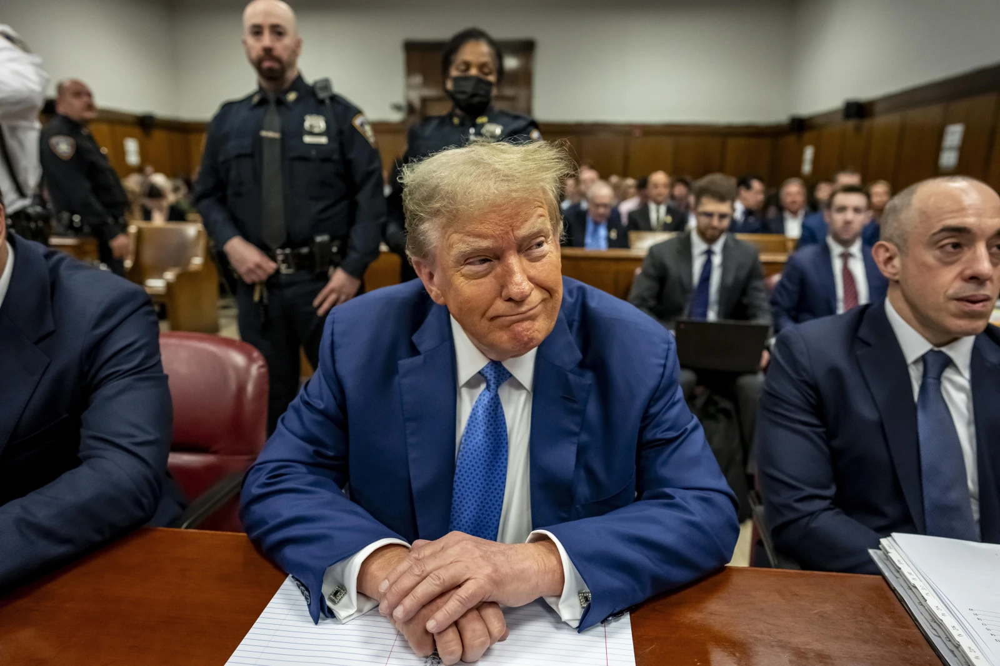

By Turrnut on November 30, 2024
Let's discuss Donald Trump—whether you love him or hate him, he have won the 2024 presidential election, and it is a fact that he will become the next president of the United States.
Before we analyze Trump, let's look at the facts first. Before he became president, he was a businessman. His holding company, The Trump Organization, which owned a lot of golf courses, operated and invested in fields such as real estate, hotels, resorts, etc.
It is during this time that he developed an amibition to run for U.S. president, and to pursue fame. According to CNN, Trump said that a primary motivation to run for president is to be famous. Now, that is very honest of him, but at that time no one knows if he will be a good president or not yet.
Trump ran in the 2016 presidential election as the Republic nominee against the Democratic nominee Hillary Clinton. And since the start of his campaign, he made clear to Americans that he is a distinct candidate from his opponents. He promised to build a wall on the US-Mexico border, he launched an unfound accusation against Obama's birth certificate, and he invented the famous slogan "Make America Great Again", or MAGA for short.

Now, Trump is unique because not only he represented the conservatism in America but also unlike Bush or Obama, his predecessors, Trump did not have any prior political experience before becoming president. The only experience he had was in business. As a result, he ran America the same way he would run a business.
Running a business often requires you to prioritize profit over other things, and Trump's policies have reflected that priority. Trump prioritizes America first, while that might be considered good for some, it often come at the expense of other things.
For example, one of his major policy was to deport "illegal immigrants", and specifically Mexican immigrants because he believed that they're rapists and they're bringing drugs and crime. Without examining it closely, you will realize that this statement is racist, xenophobic, with the intention of creating a public sentiment against Mexicans and Latino immigrants in the United States. Now, one might argue that this puts America first, but his policy did in someway, alter the values of America. For starters, most of the American population are immigrants, and if you are an American, you come from somewhere else(unless you're a Native American). But, when Trump assumed office created this rhetoric against immigrants, which is very ironic, considering the fact that his family were once immigrants, and so were millions of his supporters.
Things took a sharp turn in 2020, when he lost the presidential election to Joe Biden, the Democratic nominee. However, he refused to accept the election results and tried to overthrow the government via the January 6th Capitol Riot. He failed and many got arrested. He also got impeached as a result.
From 2020 to 2024, he faced a lot of legal issues, or four felony cases to be exact. The first case — known as the "New York Hush Money Trial" — involves Trump having an affair with adult film actress Stormy Daniels before paying her $130,000 to make her stay quiet so he doesn't suffer from those consequences in the 2016 election. However, Trump allegedly faked the payment by stating that it is for "legal fees".
Trump's second criminal charge is about if Trump had mishandled classified documents. After Trump left office, he took classified documents from the White House to his Mar-a-Lago resort in Florida. This is illegal under the Espionage Act, because he unlawfully retained the documents —which includes important national defense information —when he no longer had the authority to access them.
Trump's third criminal trial includes his efforts to invalidate the 2020 Presidential Election. After the election, Trump tried to overturn the results by spreading lies about the election and attempted to use the Capitol attack as an excuse to postpone Biden's inauguration. Trump was charged with the conspiracy to defraud the US, conspiracy to obstruct an official proceeding, and the conspiracy against the rights of the US citizens.
In addition to all of the above mentioned cases, Trump is also accused of overturning the election results in the state of Georgia, where he was narrowly defeated by Biden.
If you think a convicted felon who tried to overthrow the government is ineligible to run for president, you unfortunately would be wrong, because Trump ran again in the 2024 election and won. Making him the first convicted felon to be elected as the President of the United States.
And now, we are able to peek at what madness will he bring to the United States. To begin, He appointed Elon Musk—a billionaire, his patreon and friend, Robert F. Kennedy—an anti-vaccine conspiracy theorist, in his cabinet. Many expert predicted that he will restrict reproductive rights, he had publicly announced that he will launch a deportation for Mexican immigrants, and he recently declared that he will raise tariffs for countries like Mexico, Canada and China.
Responding to the title of this blog post—what is my opinion on Donald Trump? Well, I disapprove of his immigration policies, because he have essentially changed the core values of America—a country with 97% of its people being immigrants. I also disapprove his opinion on abortion—he is anti-abortion. There is nothing pro-life about letting women suffer. Finally, I disapprove of him as a person, a person who was charged with 4 felony cases but still believes that he should be above the law, which, he probably is, given the fact that charges against him are not going anywhere.
I am going to wrap up this blog post here. Hopefully this gives you an idea of what to expect from a country that has a convicted felon as president for the next 4 years.